Sobrevivência
Colete recursos, construa abrigos e enfrente monstros para sobreviver noite após noite.
// bem-vindo ao servidor
Explore, construa e sobreviva em um mundo sem limites.
01 · sobre o jogo
Minecraft é um jogo sandbox onde cada elemento do cenário — árvores, montanhas, rios e cavernas — é formado por blocos que podem ser quebrados, coletados e reposicionados livremente. Não existe um único caminho certo: cada jogador decide se quer construir castelos, cultivar fazendas, explorar cavernas profundas ou simplesmente sobreviver mais uma noite.
Essa liberdade total é o motivo do seu sucesso. Sem uma história fixa nem um objetivo obrigatório, o jogo se adapta ao estilo de quem joga: pode ser um simulador de construção tranquilo ou um desafio de sobrevivência tenso, dependendo apenas da escolha do modo de jogo.
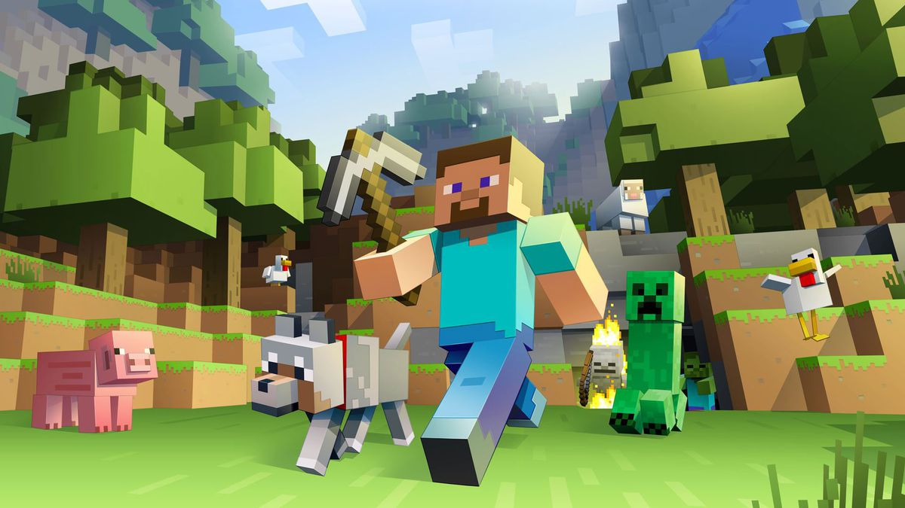
02 · modos de jogo
Cada modo muda completamente a experiência — do relaxamento total ao desafio extremo.
Colete recursos, construa abrigos e enfrente monstros para sobreviver noite após noite.
Recursos infinitos e voo livre para construir qualquer coisa que a imaginação permitir.
Feito para mapas personalizados, com regras especiais definidas por quem criou o mundo.
Sobrevivência no nível máximo de dificuldade — e apenas uma vida disponível.
Atravesse blocos e observe o mundo livremente, sem interagir com nada ao redor.
03 · biomas
Cada bioma tem seu próprio visual, clima e recursos exclusivos.
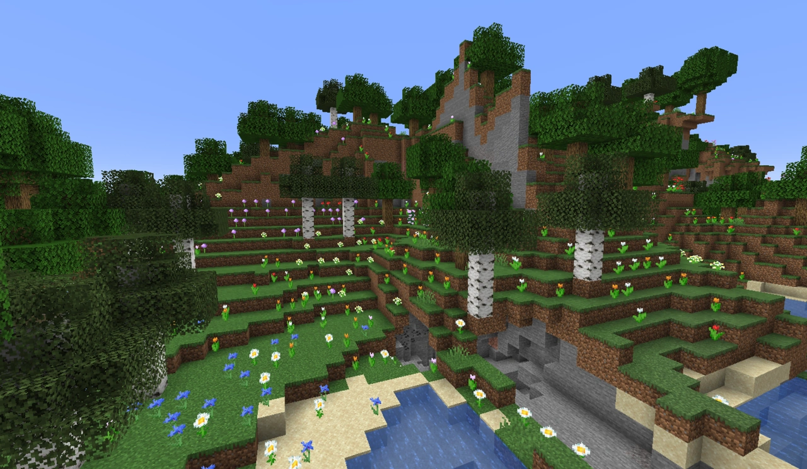
Árvores densas, madeira em abundância e animais pacatos vagando entre as folhas.
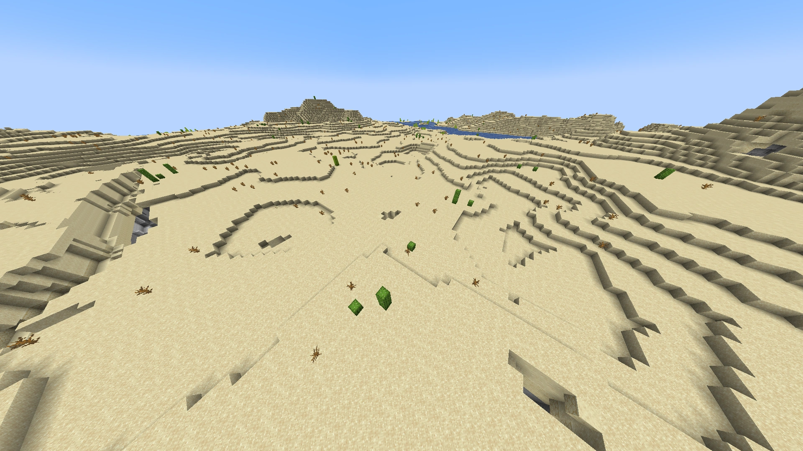
Dunas intermináveis de areia, templos escondidos e pouquíssima água por perto.
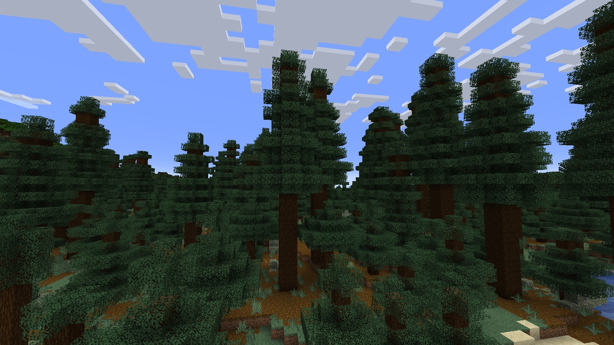
Florestas de coníferas cobertas por um verde escuro, com lobos rondando a região.
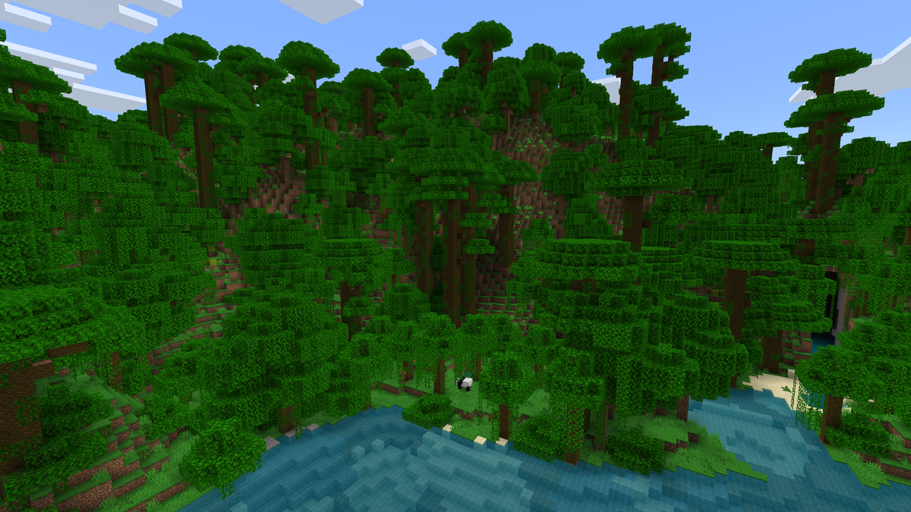
Vegetação alta e fechada, templos antigos e a rara chance de encontrar um pandinha.
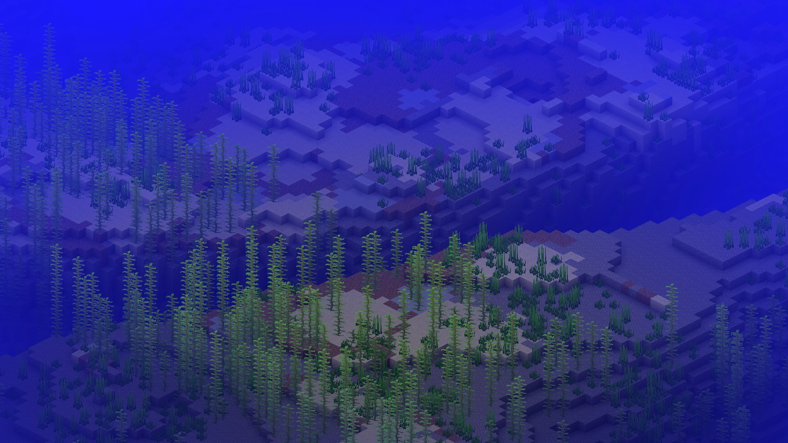
Águas profundas com naufrágios, monumentos submersos e recifes de coral coloridos.
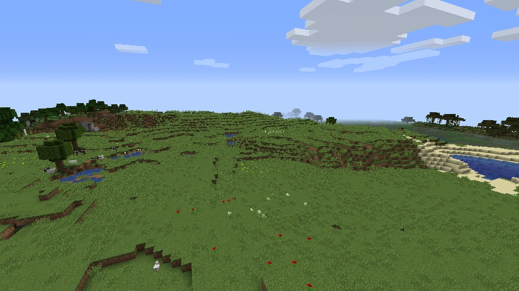
Campos abertos e planos, ideais para as primeiras construções de qualquer jogador.

Dimensão infernal de lava e rocha vermelha, habitada pelas criaturas mais hostis.
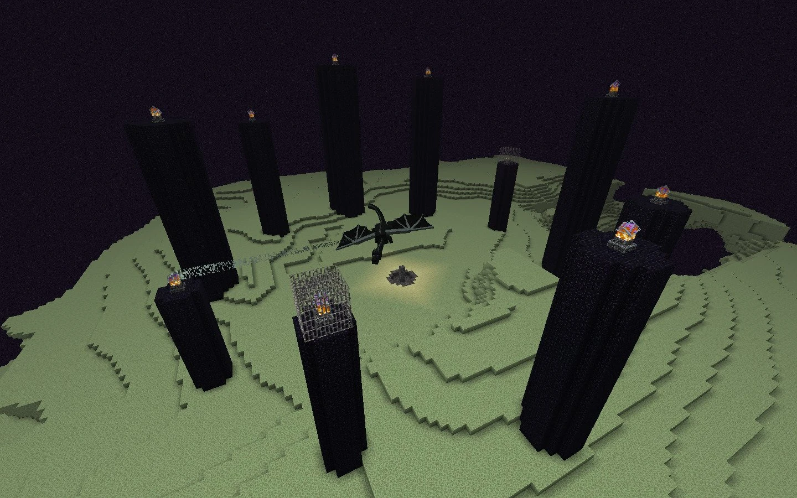
Ilhas flutuantes isoladas no vazio, lar do desafio final do jogo.
04 · mobs
Passe o mouse sobre cada criatura para vê-la reagir.
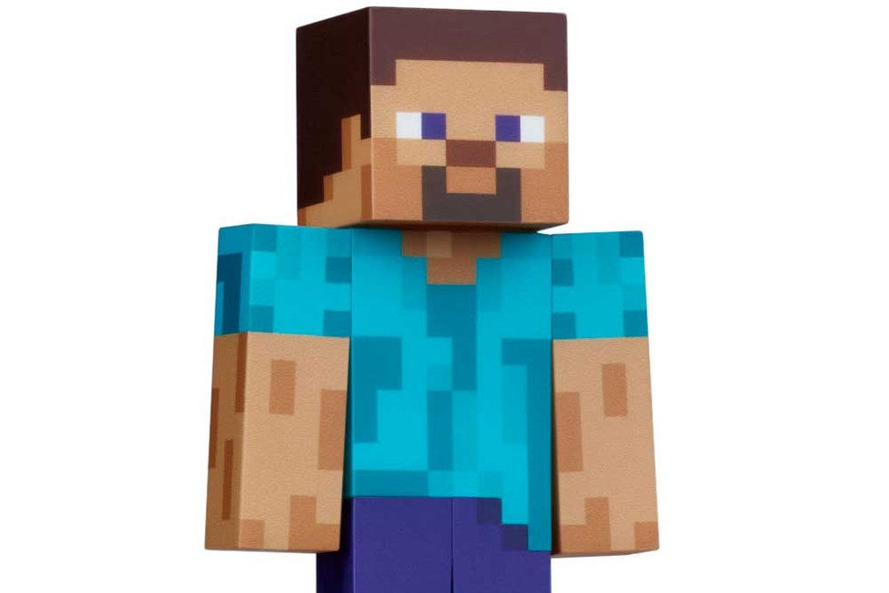
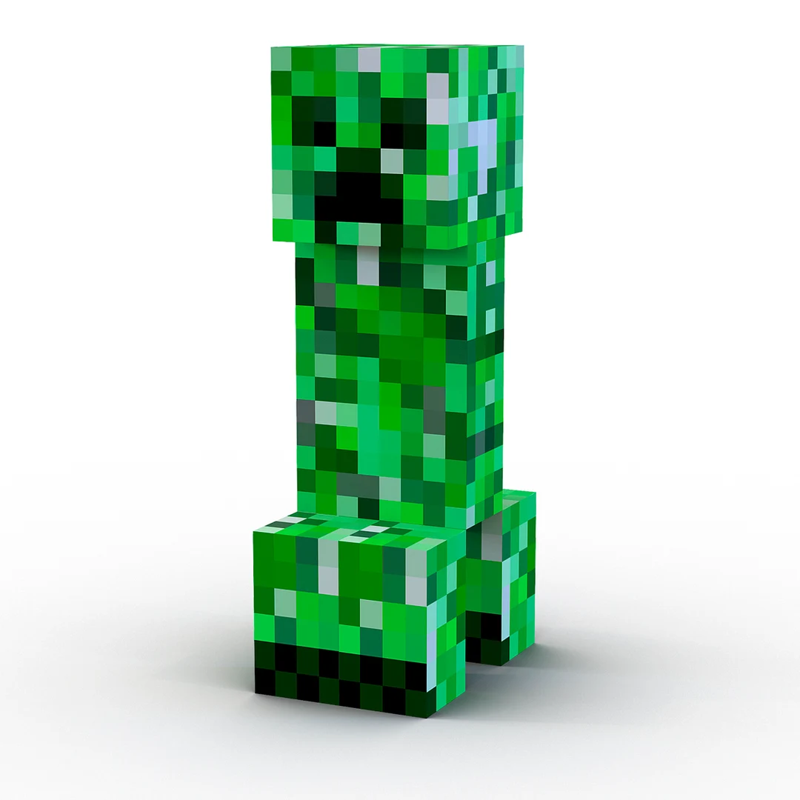
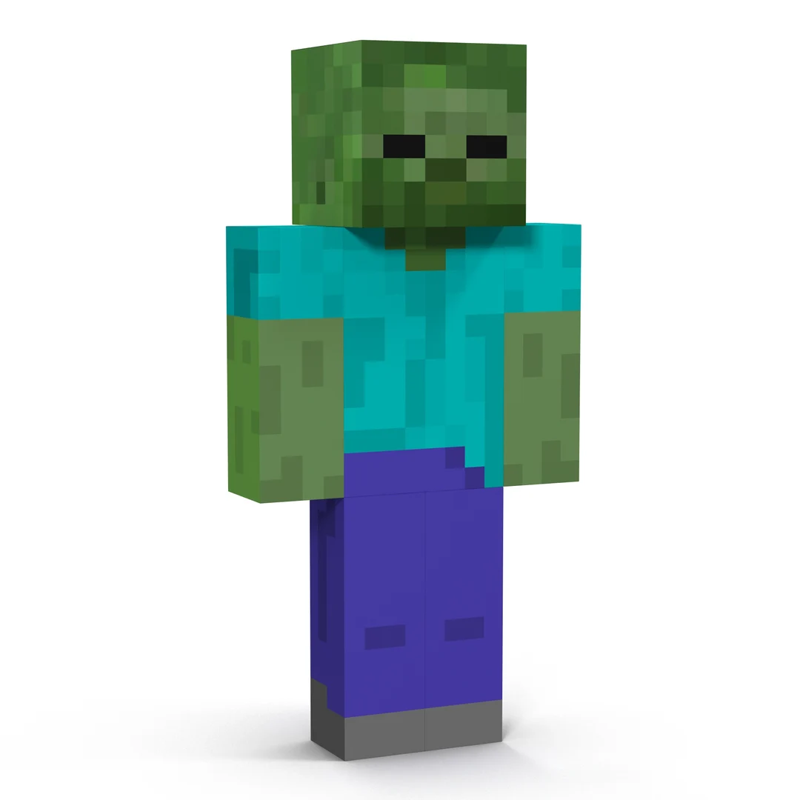
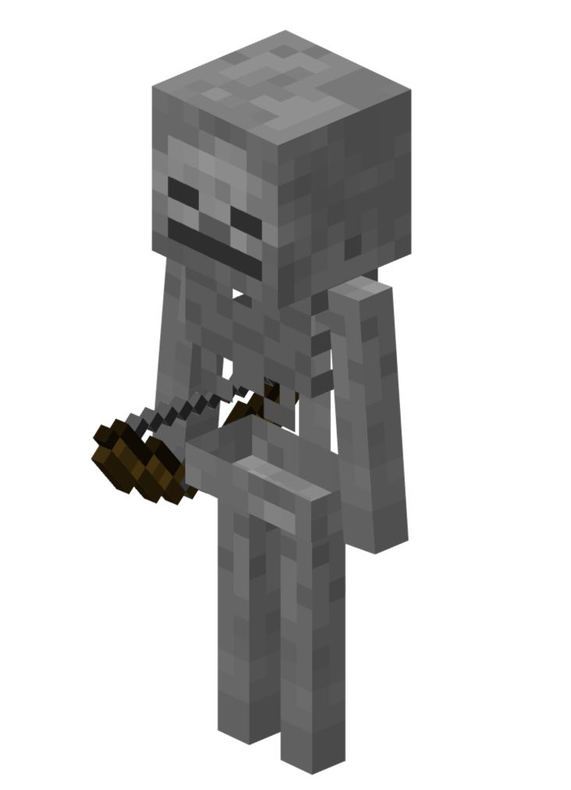
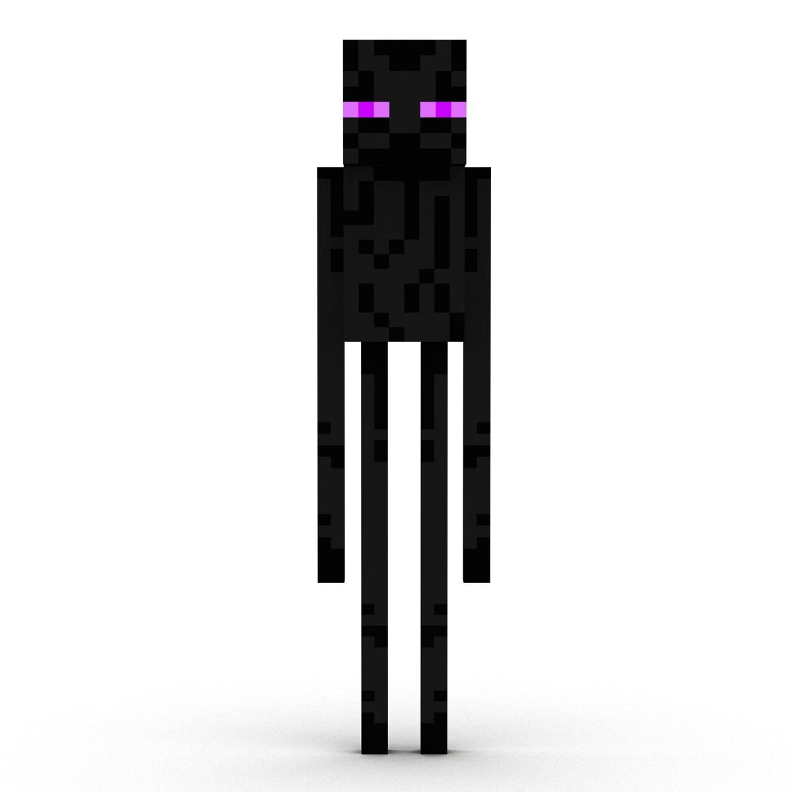
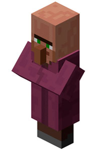
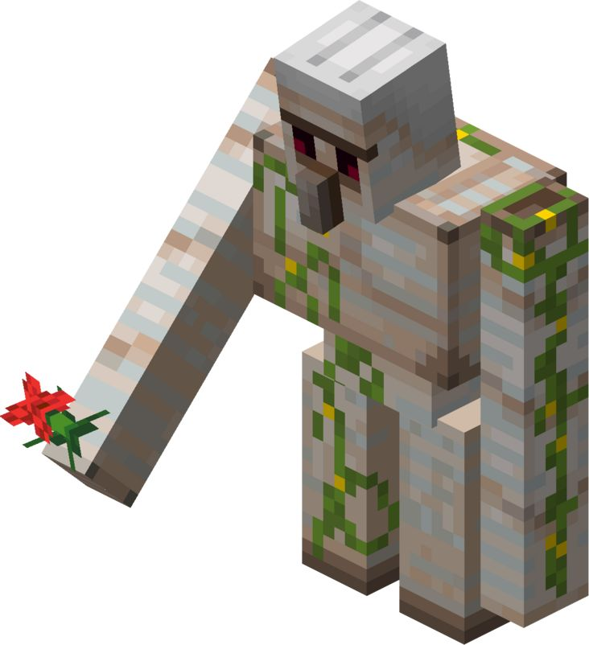
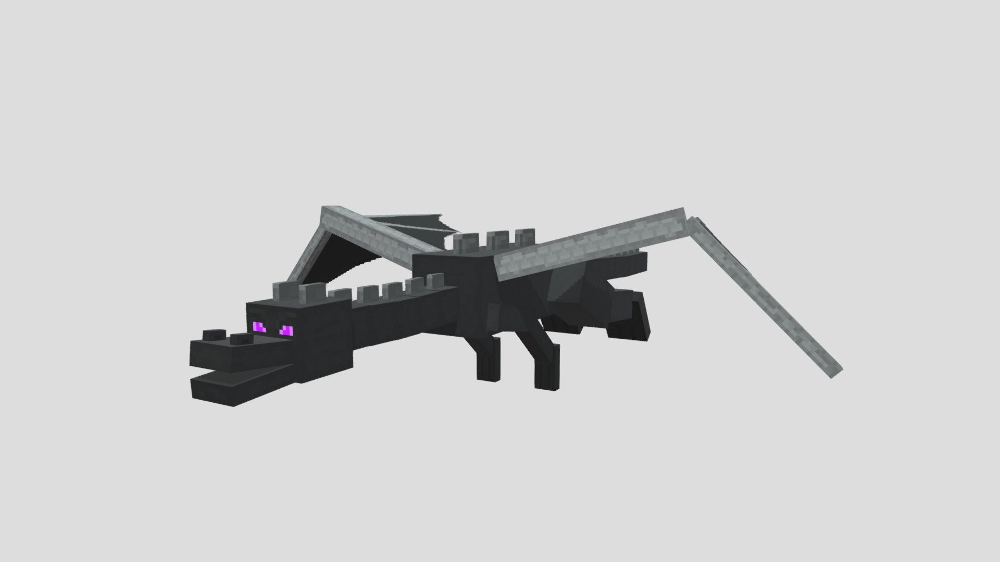
05 · itens e recursos
Do básico ao lendário — o que vale a pena minerar.
Encontrado nas profundezas, cria as ferramentas e armaduras mais resistentes antes da netherite.
O metal essencial do início do jogo, usado em ferramentas, armaduras e blindagens.
Brilhante e versátil, usado em trocas com piglins e em itens especiais de proteção.
O "fio elétrico" do jogo — permite criar circuitos, mecanismos e contraptions complexas.
Rara e valiosa, funciona como a moeda de troca oficial com os aldeões.
O material mais forte do jogo, forjado a partir de sucata encontrada no Nether.
06 · curiosidades
O jogo começou como um projeto solo do programador sueco Markus "Notch" Persson.
Versão oficial 1.0 lançada, marcando a saída do jogo do estágio de acesso antecipado.
O nome "Creeper" surgiu de um erro de programação: o criador tentou modelar um porco e o modelo saiu errado.
É um dos jogos mais vendidos da história, com centenas de milhões de cópias em praticamente todas as plataformas.
Grande parte da longevidade do jogo vem dos mods e mapas criados pela própria comunidade de jogadores.